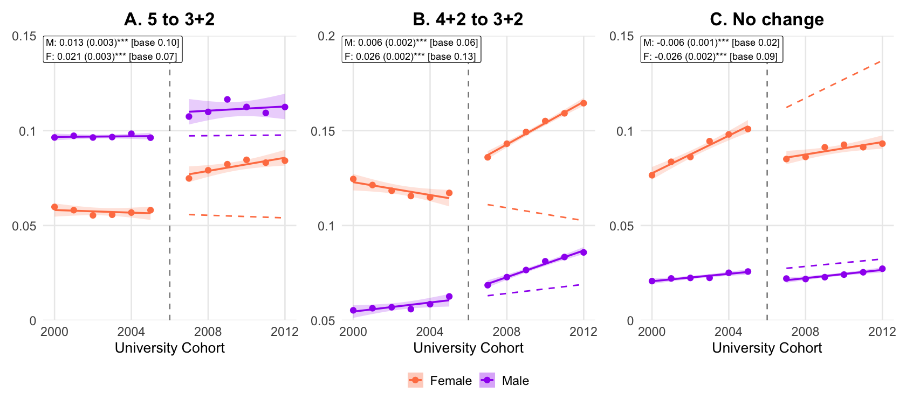
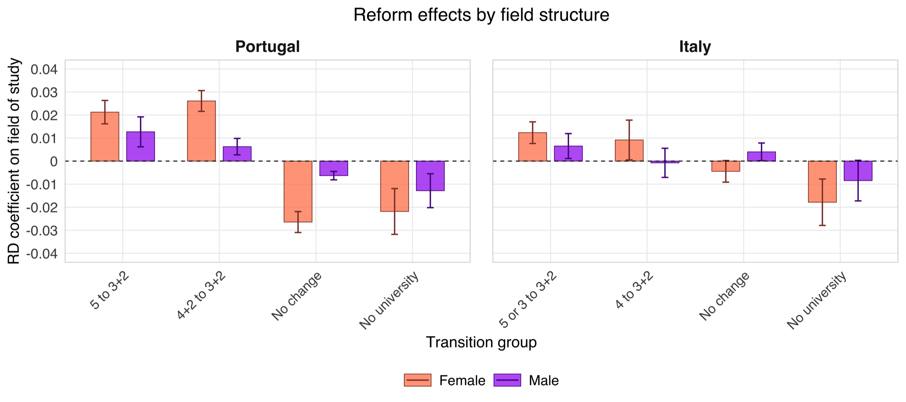

Abstract
University is a costly investment made under uncertainty: students pay while enrolled, learn only gradually whether a degree suits them, and receive much of the return only if they finish. This paper asks how degree length shapes educational choices and earnings. I study the Bologna Process, which changed degrees in two ways. Where a field already had a bachelor’s and a master’s, it shortened the bachelor’s to three years. Where a field had a single long degree, it split that degree into a bachelor’s and a master’s. Using a regression discontinuity across birth cohorts and linked employer–employee data from Portugal, I find that the reform raised university completion by 2.1 percentage points (8%) and years of university by 7%, with larger gains for women. Students moved towards both kinds of reformed field and away from fields the reform left unchanged. Where degrees were split, more students completed both parts. At age 30, hourly wages are 3% higher, and about two-thirds of the gain reflects work in higher-paying firms. Italian data show similar gains. A model in which students learn about their match while enrolled reproduces the education responses. Splitting long degrees reduced what students stood to lose if the field proved a poor match, since they could now leave early with a bachelor’s. This drew in students, some of whom went on to complete the master’s.
Research question
Long degrees are risky. Students bear tuition and foregone earnings from the start, but learn only gradually whether they are well matched to their field, and much of the payoff arrives only if they graduate. The Bologna Process changed that investment in two distinct ways: it shortened some existing bachelor’s degrees from four years to three, and it inserted a three-year bachelor’s into fields that had previously offered only a single five-year degree.
The first change lowered the cost of obtaining a first degree. The second created an earlier exit with a recognised qualification, reducing the downside of trying a field under uncertainty. The paper asks whether these changes drew more students into university, whether students stopped at the new bachelor’s or continued to a master’s, how their choice of field changed, and how those choices affected later earnings.
Setting and empirical design
Portugal implemented the Bologna structure rapidly in 2006–07. Because most students enter university at 18, cohorts turning 18 in 2007 or later made their choices under the new system. I use a regression discontinuity design that compares birth cohorts on either side of this cutoff, excluding the partly treated 2006 cohort.
Italy provides a second setting. Its reform took effect six years earlier and students typically enter university at 19. Finding similar changes at a different cutoff helps distinguish the effect of Bologna from other conditions affecting Portuguese cohorts in 2007.
Data
The main analysis uses Quadros de Pessoal, Portugal’s linked employer–employee data for the private sector. It records workers’ education, field of study, wages, occupations, job titles and employers, making it possible to follow the reform from university choices into jobs and to estimate the wage premium paid by each firm. I validate the education results using the Portuguese Labour Force Survey and the Education and Training Survey, both of which represent the wider resident population. The Italian Labour Force Survey provides the cross-country comparison.
Main findings
More students complete university, and total schooling rises. University completion increases by 2.1 percentage points, or 8% of the pre-reform mean. Average years of university rise by about 0.14 years, or 7%, so the schooling added by new graduates more than offsets any reduction among students who finish earlier. The gains are larger for women.
Students move towards fields where Bologna changed the first credential. Degrees increase both in fields that gained a three-year exit—mostly engineering and the sciences—and in fields where the first degree became shorter, including economics, management, the social sciences and the humanities. Students move away from fields with no comparable new exit, especially nursing in Portugal. These shifts are substantially larger for women.

The new exit does not simply lead students to stop after three years. Engineering degrees rise, as does employment in engineering occupations that require the full five-year qualification. The reform made engineering less costly to try; some of the additional students then discovered that they were well matched and continued through the master’s.
Wages rise, largely because graduates work at better-paying firms. At age 30, hourly wages are 3% higher for post-reform cohorts: 3.5% for women and 2.3% for men. An AKM decomposition shows that about two-thirds of the gain comes from sorting into firms with higher wage premia. IT and engineering, business services and finance account for most of the overall wage gain, linking the change in earnings to the fields and sectors towards which students moved.
Early earnings losses are recovered by the early thirties. Post-reform cohorts enter work later and therefore earn less cumulatively through their twenties. Higher subsequent wages close the gap around age 30 for men and 31 for women.
External validity
Italy shows the same broad pattern: university completion rises, students move towards fields that gained an earlier credential, and the effects are larger for women. The field effects are smaller than in Portugal, but they occur around a reform introduced six years earlier.

Takeaway
An earlier credential changes more than the time needed to graduate. By giving students a valuable exit if a field proves to be a poor match, it makes university less risky to try. In Portugal, that option brought more students into higher education, shifted them towards the fields most affected by the reform, and raised wages without diverting them from longer qualifications. The results show how stepping-stone credentials embedded within university can expand access while still encouraging progression to advanced degrees.